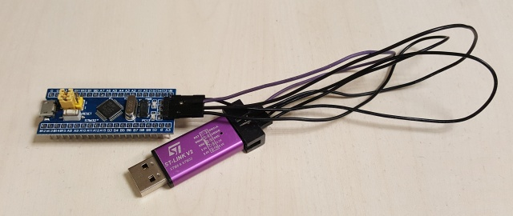
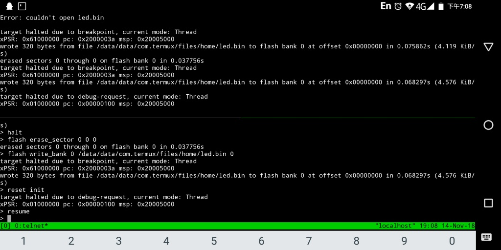
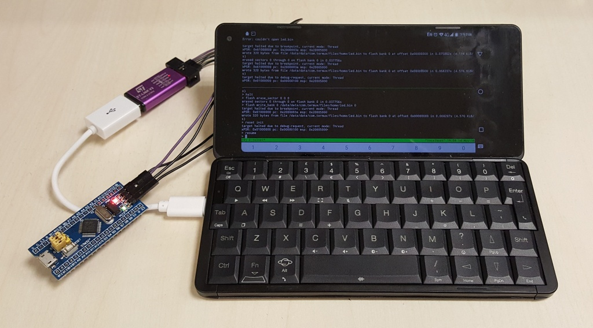

Steward
分享是一種喜悅、更是一種幸福
手機 - Gemini PDA 4G - Android - Termux - 使用openocd燒錄STM32F103
led.S
.thumb
.syntax unified
.equ GPIOC_CRH, 0x40011004
.equ GPIOC_ODR, 0x4001100c
.equ RCC_APB2ENR, 0x40021018
.equ STACKINIT, 0x20005000
.equ LEDDELAY, 800000
.global _start
.section .text
.org 0x0
.word STACKINIT
.word _start
.org 0x100
.thumb_func
_start:
ldr r6, =RCC_APB2ENR
mov r0, 0x10
str r0, [r6]
ldr r6, =GPIOC_CRH
ldr r0, =0x44344444
str r0, [r6]
mov r2, 0
mov r3, 0x2000
ldr r6, =GPIOC_ODR
loop:
str r2, [r6]
ldr r1, =LEDDELAY
delay1:
subs r1, 1
bne delay1
str r3, [r6]
ldr r1, =LEDDELAY
delay2:
subs r1, 1
bne delay2
b loop
led.ld
SECTIONS
{
. = 0x0;
.text :
{
*(.text)
}
.data :
{
*(.data)
*(.rom)
}
. = 0x20000000;
.ram : { *(.ram) }
.bss :
{
*(.bss)
*(.ram)
}
}
Makefile
all: arm-none-eabi-as -mcpu=cortex-m3 -mthumb -mthumb-interwork -o led.o led.S arm-none-eabi-ld -T led.ld -o led.elf led.o arm-none-eabi-objcopy -O binary led.elf led.bin clean: rm -rf led.o rm -rf led.elf rm -rf led.bin
編譯(Linux Deploy)
$ make
arm-none-eabi-as -mcpu=cortex-m3 -mthumb -mthumb-interwork -o led.o led.S
arm-none-eabi-ld -T led.ld -o led.elf led.o
arm-none-eabi-objcopy -O binary led.elf led.bin
接腳：
| ST-Link V2 | STM32 |
|---|---|
| GND | GND |
| 3.3V | 3.3V |
| SWCLK | SWCLK |
| SWDIO | SWDIO |

燒錄
$ tsudo openocd -f /data/data/com.termux/files/usr/share/openocd/scripts/interface/stlink-v2.cfg -f /data/data/com.termux/files/usr/share/openocd/scripts/target/stm32f1x.cfg $ telnet localhost 4444 > halt > flash erase_sector 0 0 0 > flash write_bank 0 /data/data/com.termux/files/home/led.bin 0 > reset init > resume
完成

